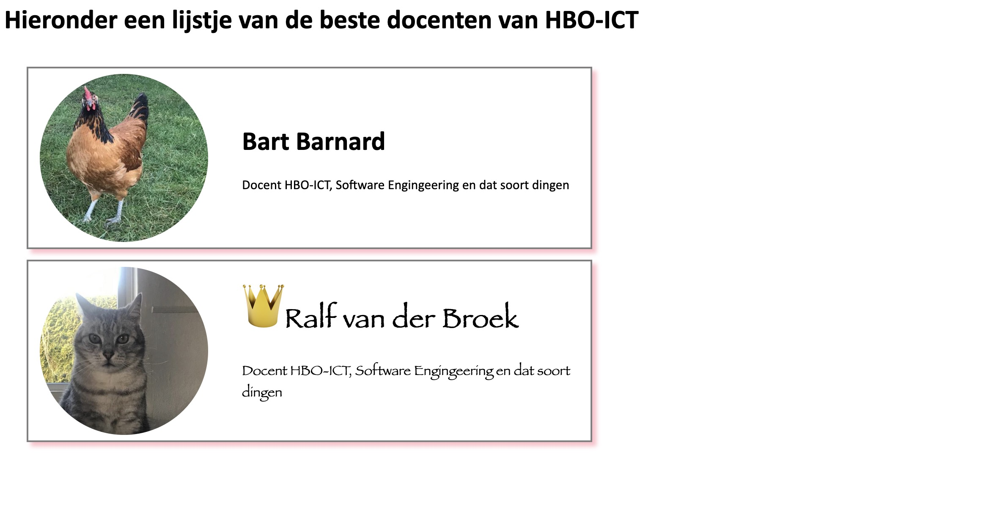

Oefeningen#
Hoewel we ons bij de eindopdracht meer met de backend dan met de frontend bezighouden, is het natuurlijk wel van belang dat je weet wat je met die backend op moet leveren. Gebruik de onderstaande oefenignen om een beeld te krijgen van hoe die frontend-tecnieken werken, en hoe deze met de backend samenwerken.
Voorbereiding#
Download het script docentenpagina.php en zet het ergens neer zodat je er makkelijk bij kunt. Start in de betreffende directory een ontwikkelserver (php -S localhost:8000) en navigeer met een browser naar het script.
Bestudeer het script. Zoals het nu is, doet het nog niks. Er wordt alleen een variabele aangemaakt met de kernwaarden van een aantal docenten. Het is de bedoeling dat je met behulp van de volgende oefeningen het script wat interactiever maakt.
Hernoemen
Hernoem het bestand docentenpagina.php naar index.php: op deze manier hoef je alleen maar naar localhost:8000 te gaan om het bestand uit te voeren en het resultaat te zien: als er geen specifiek bestand gevraagd wordt, wordt door de ontwikkelserver het bestand index.php (of index.html) teruggegeven.
1. De favoriete docenten#
Zorg ervoor dat je, wanneer je naar het bestand navigeert, de gegevens van je favoriete Hanze-docenten weergeeft. Omdat dit een lijstje betreft, is het logisch om deze gegevens in een ul-tag te zetten. De gegevens van de docenten zitten dan in geneste li’s.
Pas het script aan, zodat je elke docent van een plaatje kunt voorzien (hiervoor moet je dus de gegeven array uitbreiden en zelf plaatjes vinden). Zorg ervoor dat dit plaatje fatsoenlijke afmetingen heeft en dat de gegevens van de docent rechts van het plaatje staan. Over het algemeen is het een goed idee om die verschillende onderdelen (het plaatje, de gegevens) in separate tags te zetten (bijvoorbeeld divs).
Zie de afbeelding hieronder voor een mogelijk resultaat tot dusver.

2. Betere stilering#
Geeft de divs waarin de gegevens van de docenten staan een class-attribuut en gebruik vervolgens CSS om de volgende eisen te realiseren:
maak het font schreefloos (bijvoorbeeld Calibri of Verdana). Zorg er daarbij voor dat wanneer de bezoeker het specifieke font dat je opgeeft niet heeft er wordt teruggevallen op het standaard schreefloze font van het OS.
zorg ervoor dat de
divs met de gegevens van de docenten wat verder van elkaar af komen te staan; geef ze wat ruimte links en boven.zorg er daarbij wel voor dat de plaatjes binnen de
bordervan de betreffendedivkomen te liggen.maak wat afstand tussen het plaatje en de tekst.
voorzie deze
divs van eenborder, zodat duidelijk is welke gegevens waarbij horen.
Ziet het onderstaande plaatje voor een voorbeeld:

3. Wat fancier vormgeving#
Het geheel kan nog wel wat fancier worden vormgegeven. Het is natuurlijk helemaal hip om avatars rond te maken, dus dat gaan we hier nu ook doen: gebruik het css-attribuut border-radius om dat voor elkaar te krijgen. Zorg er daarbij wel voor dat de afbeeldingen vierkant worden (dus even breed als hoog zijn).
Verder vinden we de kaartjes van de docenten wel erg breed en in your face: maak deze kaartje wat smaller en geef de border een wat fijner kleurtje en een schaduw.

4. Verticaal centreren#
Een lastig ding in HTML/CSS is (nog steeds, hoewel het langzaamaan beter te doen is) het verticaal centreren van blocklevel-elementen (wat eigenlijk absurd is wanneer je bedenkt dat Donald Knuth al in de jaren tachtig \vfill bedacht had, maar soit). Bestudeer deze site om een goede uitleg te krijgen van wat het probleem is en hoe het (min of meer) te omzeilen.
Gelukkig is er tegenwoordig de optie om de display van een div op flex te zetten; dat maakt dit allemaal wat makkelijker. Bekijk deze site om te zien hoe dat werkt. Zorg ervoor dat de tekst van je favoriete docenten nu vertikaal in de div komt te staan. In module webtechnologie 3 gaan we nog wat verder in op de flexbox.

5. Klikbaar#
Maak nu van de hele li (de kaart van de docent) een grote hyperlink. Wanneer je op deze kaart klikt, moet je op een pagina komen waarop je de gegevens van de betreffende docent kunt onderhouden. Zorg er bijvoorbeeld voor dat je de naam, de vierlettercode, of de vakken die de docent geeft kunt aanpassen.
Je zult hiervoor de gegevens in de gegeven array moeten overschrijven. Je kunt misschien ook wel een pagina maken waarop je een nieuwe docent aan de gegeven array toevoegt.
Zorg ervoor dat de gegevens zoals je die hebt aangepast op het scherm terugkomen. let op: omdat de array alleen maar in memory bestaat, worden de wijzigingen die je aanbrengt niet echt opgeslagen - als je de pagina opnieuw laadt, zul je de gegevens uit de oorspronkelijke array weer terugzien.
Mocht je je geroepen voelen, dan is een extra uitdaging om de gegevens van de array wel daadwerkelijk op te slaan. Om dit voor elkaar te krijgen kun je gebruik maken van require_once en file_put_contents.